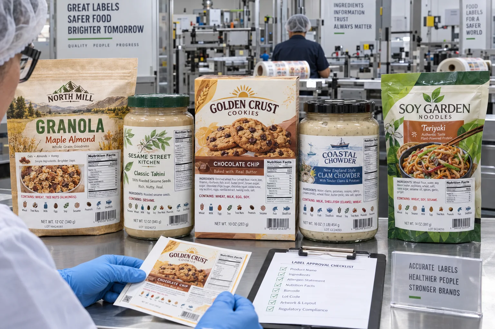

Short answer
Do not treat allergen copy as a final artwork edit. Build it from the approved recipe, current ingredient specifications and target-market rules, then lock that decision to an artwork revision. In the United States, FDA identifies nine major food allergens: milk, eggs, fish, crustacean shellfish, tree nuts, peanuts, wheat, soybeans and sesame.
At our proof desk, the dangerous sentence is not usually a complicated one. It is: “Nothing changed except the flavor.” Flavor is exactly where a new nut paste, dairy carrier or sesame ingredient can enter a product. A visually small change can create the largest label risk.
Two declaration routes, one source of truth
FDA explains that a major allergen source may appear in parentheses after an ingredient, such as lecithin (soy), or in a separate Contains statement immediately after or next to the ingredient list. If a Contains statement is used, it should consistently identify every major allergen present. The design decision comes after the ingredient decision.
| Proof item | What to verify | Common failure |
|---|---|---|
| Formula | Current approved recipe and sub-ingredients | Using the previous flavor as a template |
| Supplier data | Exact source names and formulation changes | Checking only the front of an ingredient bag |
| Ingredient list | All components in the required order and form | Dropping a carrier or compound ingredient |
| Contains line | Every declared major allergen matches the formula | Updating one location but not the other |
| Artwork revision | SKU, version, approval date and approver | Sending an old PDF because its filename looks final |
A composite launch: the sesame change nobody saw
This is a composite planning example, not a claimed customer incident. A bakery brand refreshes a cookie recipe with a new seasoning blend. The front panel and nutrition values are updated, but the previous ingredient panel is reused because the product name did not change. The new blend contains sesame.
The printer cannot discover that from the dieline. The co-packer may assume the brand owns the copy, while the brand assumes the ingredient supplier already disclosed everything. That gap is why I prefer an awkward ten-minute formula check over an elegant proof approved from memory.
The corrective workflow is simple: compare formula to supplier specifications, rebuild the ingredient and allergen declarations, issue a new revision, withdraw the old file and document who approved the replacement.
Icons can help navigation, but they do not carry the declaration
Milk, peanut or wheat pictograms can help shoppers scan a panel and can make internal proof discussions faster. They should support, not replace, the required text. Use clear, ordinary symbols and keep them visually separate from unsupported certification or free-from claims.
This is also where blank-pack photography fails a B2B buyer. A realistic label should show how ingredients, warnings, product identity, net quantity and brand graphics compete for limited space. Our article image uses complete fictional retail artwork so the layout problem can actually be seen.
“May contain” is not a repair tool
Precautionary language may be relevant after a real cross-contact assessment, but it should not be added casually to cover weak controls. FDA states that advisory statements must be truthful and not used instead of adhering to good manufacturing practices. The food producer owns that assessment; the label converter should print exactly the approved language and preserve traceability.
Factory-side view
The printer should challenge mismatched files, not write the recipe
We can flag a Contains line that says soy while the ingredient list says soybean oil, or notice that one SKU lacks the sesame line used by the rest of a range. That is useful proof control.
But a converter should not infer an allergen from a product name or invent compliant copy. The responsible food business must make and approve the regulatory decision.
Build revision control into the purchase order
- Assign a unique SKU and artwork revision to every formula.
- Place the revision in the file name, approval record and carton label.
- Require a new regulatory review when an ingredient supplier or recipe changes.
- Compare the ingredient list, Contains line and front-panel claims together.
- Archive the approved PDF and make older versions unavailable for reorder.
- At receiving, match printed cartons to the purchase order revision.
- Keep a retained sample from each production lot.
Where a simpler label wins
Not every package needs multiple icons, callouts and a large “free from” area. When the panel is small, readable mandatory copy should win. A clean ingredient and Contains block can be more useful than five decorative symbols that squeeze the type below a practical reading size.
Start with the official FDA food allergen guidance, then have qualified regulatory counsel review the actual product and market. For the physical layout, continue with our Food Label Layout Requirements guide.
Frequently asked questions
What are the nine major food allergens in the United States?
They are milk, eggs, fish, crustacean shellfish, tree nuts, peanuts, wheat, soybeans and sesame. Sesame became the ninth major allergen on January 1, 2023.
Is a Contains statement always required?
FDA guidance allows the food source to be declared in the ingredient list, including in parentheses after an ingredient, or in a separate Contains statement placed immediately after or next to the ingredient list. The exact label should be reviewed for the product and market.
Can May contain replace allergen controls?
No. Precautionary wording is not a substitute for good manufacturing practices, cross-contact controls or an accurate ingredient declaration.
Who should approve allergen label copy?
The brand or responsible food business should approve it against the current formula and supplier specifications. A printer can reproduce approved copy but should not invent regulatory language.
Related label guides
- Label Roll Core Size and Outer Diameter Guide
- Glassine vs PET Release Liners for Roll Labels
- Wet-Glue vs Pressure-Sensitive Bottle Labels
Review the complete label construction
Send package photos, material details, finished label size, quantity by artwork, storage conditions and application method. We can review fit, material and production details before preparing a quote and digital proof.